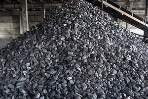
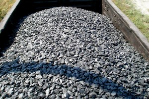
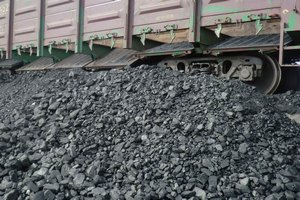

<section>
    <div class="wrapper">
        <h2 class="goods">НАША ПРОДУКЦИЯ</h2>
        <p>Наша компания предлагает к реализации высококачественный антрацит Донецкого каменноугольного бассейна. Антрацит представляет собой ископаемый уголь наиболее высокой степени углефикации, о чем свидетельствует высокая отражательная способность углей этой группы. Предагаемый нами уголь добывается из низкозольных и низкосерных пластов, что обеспечивает его высокое качество даже без дополнительного обогащения на ЦОФ.</p>
        <p>Антрацит широко применяется как высококачественное бездымное энергетическое топливо, а также как технологическое сырьё в чёрной и цветной металлургии, химической, электротехнической промышленности и ряде других производств, связанных с продуктами переработки антрацита. Для технологических целей важны повышенная механическая и термическая устойчивость антрацита, его электропроводность и низкий выход летучих веществ. Основные нетопливные направления: производство термоантрацита, углеграфитовых блоков, электродов, электрокорунда, карбидов кальция и кремния, термографита, микрофонного порошка, использование для агломерации железных руд, обжига карбонатных пород в технологических целях. Несмотря на относительно низкий процент потребления антрацита для технологических целей (от 0,12 до 7% в зависимости от вида производств), требования к его качеству по сравнению с топливно-энергетическим использованием являются наиболее высокими. Даже сравнительно небольшое ухудшение некоторых свойств антрацита часто отрицательно влияет на качество промышленный продукции.</p>
        <div class="images">
            
            
               
        </div>
    </div>
</section>